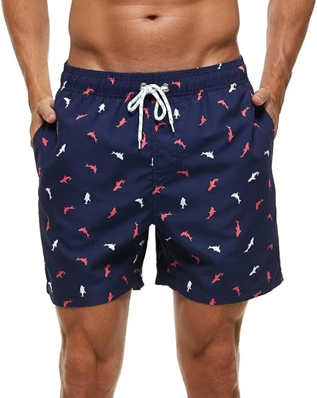
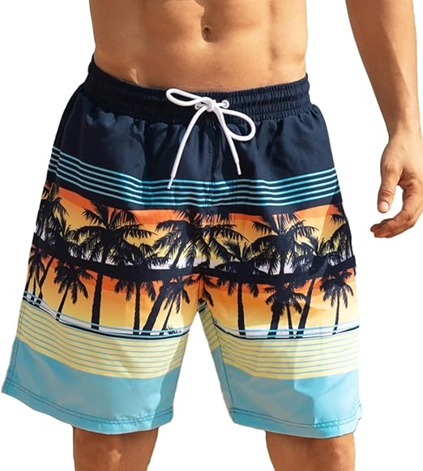

<INPUT TYPE=SUBMIT VALUE="Añadir producto al carrito" ></center>


<html>
<HEAD>
<Title>Trajes de baño</tiTle>
<!autor: Damaris Menjivar>
</head>
<body BGCOLOR="pink">
<center><font face="Viner Hand ITC" SIZE=7 COLOR="purple">Trajes de baño</FONT></center>
<HR WIDTH=70% SIZE=10% COLOR="orange">
<FONT SIZE=7 COLOR=black>
<center><UL TYPE="SQUARE"></center>
<Center><LH>Conjunto de traje de baño de dos piezas.</LH></font></center>
<font size=5 color=blue>
<Center></center>
<center><Li> Tipo de tela: 85 % poliéster, 15 % elastano.</center>
<center><Li> Cuenta con cuello en V, brasier extraíble, correas ajustables y parte inferior de bikini con cintura alta para cubrir tu abdomen.</center>
<center><Li> Color: Flores verdes blancas y azules.</center>
<center><Li> US $27.50</center>
<center><Li>Instrucciones de cuidado del material: Lavar a mano, no lo pongas en la lavadora.</center>
<center><INPUT TYPE=CHECKBOX NAME= variable> Opción<br><br></center>
<center><INPUT TYPE=RADIO NAME= variable VALUE=Talla S >Talla S<BR></center>
<center><INPUT TYPE=RADIO NAME= variable VALUE=Talla M >Talla M<BR></center>
<center><INPUT TYPE=RADIO NAME= variable VALUE=Talla N >Talla N<BR></center>
<center><INPUT TYPE=RADIO NAME= variable VALUE=Talla XL>Talla L<BR></center>
</UL></font>
</BODY>
</HTML>


<FONT SIZE=7 COLOR=black>
<UL TYPE="square">
<HR WIDTH=70% SIZE=10% COLOR="orange">
<Center><LH>Traje de baño de una pieza con volantes.</LH></font></center>
<font size=5 color=blue>
<center></center>
<Li>Tipo de tela: 82% nailon, 18% licra.
<Li> Trajes de baño para mujer con diseño de manga con volante, con control de abdomen proporciona una cobertura completa.
<Li> Color: Rojo.
<Li> US $10:00
<Li> Instrucciones de cuidado del material: Lavado a mano.
<br><INPUT TYPE=CHECKBOX NAME= variable> Opción<br><br></center>
<INPUT TYPE=RADIO NAME= variable VALUE=Talla S >Talla S<BR>
<INPUT TYPE=RADIO NAME= variable VALUE=Talla M >Talla M<BR>
<INPUT TYPE=RADIO NAME= variable VALUE=Talla N >Talla N<BR>
<INPUT TYPE=RADIO NAME= variable VALUE=Talla XL>Talla L<BR>
</UL></font>
</BODY>
</HTML>


<HR WIDTH=70% SIZE=10% COLOR="orange">
<FONT SIZE=7 COLOR=black>
<center><UL TYPE="SQUARE"></center>
<Center><LH>Traje de baño para hombre.</LH></font></center>
<font size=5 color=blue>
<Center></center>
<center><Li> Tipo de tela: 100% tela de gamuza de poliéster, suave y cómoda, repelente al agua, sin pelusas.</center>
<center><Li> Pantalones cortos por encima de la rodilla alrededor de 5 a 7 pulgadas de entrepierna con forro de malla.</center>
<center><Li> Color: Azul con estanpado de pescado blanco y rojo.</center>
<center><Li> US $12.50</center>
<center><Li>Instrucciones de cuidado del material: Lavado a máquina.</center>
<center><INPUT TYPE=CHECKBOX NAME= variable> Opción<br><br></center>
<center><INPUT TYPE=RADIO NAME= variable VALUE=Talla S >Talla S<BR></center>
<center><INPUT TYPE=RADIO NAME= variable VALUE=Talla M >Talla M<BR></center>
<center><INPUT TYPE=RADIO NAME= variable VALUE=Talla N >Talla N<BR></center>
<center><INPUT TYPE=RADIO NAME= variable VALUE=Talla XL>Talla L<BR></center>
</UL></font>
</BODY>
</HTML>


<FONT SIZE=7 COLOR=black>
<UL TYPE="square">
<HR WIDTH=70% SIZE=10% COLOR="orange">
<Center><LH> Short cortos de playa.</LH></font></center>
<font size=5 color=blue>
<center></center>
<Li>Tipo de tela: 84% poliéster 16% elastano.
<Li> Con una longitud de 7 pulgadas y cuentan con una cintura ajustable y un ajuste holgado casual, experiencia de uso muy cómoda.
<Li> Color: Azul.
<Li> US $9.00
<Li> Instrucciones de cuidado del material: Lavado a mano.
<br><INPUT TYPE=CHECKBOX NAME= variable> Opción<br><br></center>
<INPUT TYPE=RADIO NAME= variable VALUE=Talla S >Talla S<BR>
<INPUT TYPE=RADIO NAME= variable VALUE=Talla M >Talla M<BR>
<INPUT TYPE=RADIO NAME= variable VALUE=Talla N >Talla N<BR>
<INPUT TYPE=RADIO NAME= variable VALUE=Talla XL>Talla L<BR>
</UL></font>
</BODY>
</HTML>


<center><A HREF="Parcial.html">REGRESO AL INICIO</A></center>